CS184/284A Spring 2026 Homework 3 Write-Up
Link to webpage: (TODO) Homework 3 Webpage (sp25)
Link to GitHub repository: (TODO) GitHub Repo
Link to GitHub hw repository: My Github
Overview
In this homework, we built a path tracer, starting from basic ray generation and intersections and eventually getting to realistic lighting and rendering. The main goal was to simulate how light actually behaves in a scene by tracing rays from the camera and figuring out how they bounce around and interact with objects.
In the first part of the homework, we set up the core ray tracing pipeline. We generated camera rays by mapping image coordinates onto a virtual sensor and then transforming those rays into world space. For each pixel, we shot multiple rays with small random offsets and averaged the results to get smoother images. We also implemented ray/triangle intersection using the Möller–Trumbore algorithm and ray/sphere intersection using the quadratic formula, which let us actually detect objects in the scene and render them correctly.
In the second part of the homework, we made everything way faster by implementing a BVH - Bounding Volume Hierarchy. Instead of checking every ray against every object, we grouped primitives into bounding boxes and organized them into a tree. Then we only checked intersections in parts of the scene that the ray actually goes through. We split along the axis where primitives were most spread out, which helped keep the tree balanced. This made a huge difference in performance, especially for large meshes.
In the third part of the homework, we added lighting. We first implemented a diffuse - Lambertian - material, then computed direct lighting. We tried two approaches: uniform hemisphere sampling and importance sampling. Hemisphere sampling sends rays in random directions, but a lot of them miss the light, so it’s pretty noisy. Importance sampling instead shoots rays directly toward lights, which makes the result much cleaner and more efficient.
In the fourth part of the homework, we extended this to global illumination by allowing rays to bounce multiple times. This is where things start to look much more realistic, since we can now see indirect lighting and soft light in shadows. We also added Russian Roulette to randomly stop rays early, which helps reduce computation while still keeping the results correct on average.
In the fifth part of the homework, we implemented adaptive sampling. Instead of using the same number of samples for every pixel, we checked if a pixel had converged using a confidence interval. If it had, we would stop sampling early. This way, the renderer would spend more time on noisy areas and less time on smooth areas, which makes the whole process more efficient.
One thing we found interesting about homework 3 was how big of a difference importance sampling and BVH acceleration made. At first, the renderer technically worked, but it was either super noisy or really slow. Once I switched from uniform hemisphere sampling to importance sampling, the images got way cleaner with the same number of samples. And then with BVH, scenes that took forever to render suddenly finished in seconds. It was cool to see how much performance and quality can improve just by changing how you sample or structure the data, not just by adding more computation.
Part 1: Ray Generation and Scene Intersection
Ray Generation
First, we map x and y from [0,1] to the sensor plane at z = -1 in camera space. We then build a camera-space direction (sensor_x, sensor_y, -1) and rotate it to world space by multiplying with the c2w. The ray origin is the camera position `pos`, and we set min_t/max_t.
Pixel Sampling
For each pixel (x, y), we shoot ns_aa rays. Each iteration we call get_sample() to get a random offset, add it to the integer pixel corner (x, y), then normalize by the image dimensions to get the screen coordinate for generate_ray. We call est_radiance_global_illumination on each ray and accumulate the result. After all samples, we divide by ns_aa to get the average radiance for the pixel. This jittering helps with antialiasing.
Triangle Intersection
A ray is o + t*d. A point inside the triangle is (1-u-v)*p1 + u*p2 + v*p3. Setting them equal gives 3 equations in 3 unknowns (t, u, v). We solve this with the Moller–Trumbore algorithm. e1 = p2 - p1, e2 = p3 - p1 h = cross(d, e2), a = dot(e1, h) u = dot(o - p1, h) / a v = dot(d, cross(o - p1, e1)) / a t = dot(e2, cross(o - p1, e1)) / a We reject if u < 0, v < 0, u+v > 1 (outside triangle), or t outside [min_t, max_t]. On a valid hit we set r.max_t = t, then populate isect: t-value, interpolated normal (1-u-v)*n1 + u*n2 + v*n3, primitive pointer, and BSDF.
Sphere Intersection
Substituting the ray into |p - center|^2 = r^2 gives the quadratic: a*t^2 + b*t + c = 0 where a = |d|^2, b = 2*dot(d, o-center), c = |o-center|^2 - r^2 The test function computes the discriminant b^2 - 4ac. If negative, no intersection. Otherwise the two roots t1 and t2 are returned. intersect calls test, then picks t1 if it's in [min_t, max_t], otherwise falls back to t2 (handles the case where the ray origin is inside the sphere). On a valid hit we set r.max_t = t, store t in isect, compute the normal, and fill in the primitive and BSDF pointers.

Part 2: Bounding Volume Hierarchy
BVH Construction
construct_bvh works recursively. First, compute the combined bounding box of all primitives in the range and create a node with it. If the primitive count is within max_leaf_size, mark it as a leaf and return. Otherwise, pick a split axis and point. We build a second bounding box over the centroids of all primitives, then split along whichever axis has the widest centroid extent. This heuristic tends to produce balanced trees because it splits where primitives are most spread out spatially, avoiding the case of splitting the wrong axis and getting one child that contains almost everything. The split point is the midpoint of that extent. We use partition to reorder the primitives list in place, then recurse into [start, mid) and [mid, end). If all centroids are identical, we fall back to splitting evenly by index to avoid infinite recursion.
BVH Intersection
has_intersection and intersect both start by testing the ray against the node's bounding box. If the ray misses, we return immediately without touching any children. For leaf nodes, we test each primitive directly. For interior nodes, we recurse into both children. has_intersection can return as soon as either child returns true; intersect must visit both children because the farther child might still contain the closest hit.
BVH Rendering Performance
Rendering maxplanck.dae (50,801 triangles) before proper BVH traversal was implemented took 20.9s. After implementing BVH traversal, CBlucy.dae (133,796 primitives) rendered in just 0.036 seconds. Without BVH, every ray tests against every primitive, which makes it O(n) per ray. With BVH, the tree prunes entire subtrees per bbox test, bringing the cost down to O(log n) per ray, which is why even the largest scenes render in under a second.
|
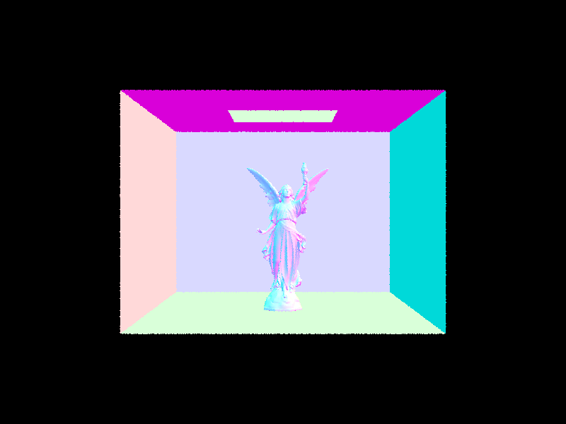 |
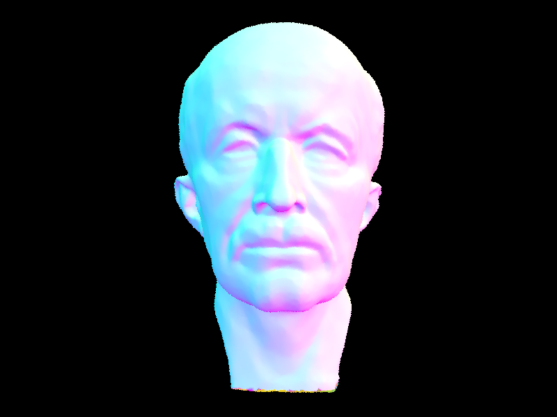 |
Part 3: Direct Illumination
Direct Lighting: Uniform Hemisphere Sampling
For each hit point, we pick num_samples random directions spread evenly across the hemisphere above it, shoot a ray in each direction, and check if that ray hits a light. If it does, we add that light's contribution to the total. We then average all contributions at the end. We sum all contributions and divide by num_samples. Because we are shooting rays in completely random directions, most of them miss the light entirely, so many samples contribute and produces a lot of noise.
Direct Lighting: Importance Sampling
Instead of random hemisphere directions, we sample each light directly. For every light in the scene, we call sample_L to get a direction wi pointing toward that light, the emitted radiance Li, the distance to the light, and the pdf for this sample. We then check two things before counting the contribution: first if cos(theta) > 0, meaning the light is in front of the surface, and second a shadow ray from hit_p toward the light doesn't hit anything before reaching it (max_t = distToLight - EPS_F). If both pass, we accumulate contribution. Point lights are sampled once ; area lights are sampled ns_area_light times and averaged. Because every sample is aimed at a light, far fewer samples are wasted, giving much less noise for the same sample count.
Noise Comparison: Varying Light Rays
Using CBbunny with -s 1 and light importance sampling, increasing -l reduces noise in the soft shadows significantly. At -l 1 the shadow regions are very grainy with high variance between pixels. At -l 4 and -l 16 the shadows visibly smooth out. At -l 64 the soft shadow edges are nearly clean with only faint residual noise.
Hemisphere vs. Importance Sampling
Both methods converge to the correct answer, but importance sampling gets there with far less noise. CBbunny at -s 64 -l 32 took 47.98s with hemisphere sampling vs. 24.74s with importance sampling, which is much faster and produced a much cleaner image. Hemisphere sampling sends rays in arbitrary directions; most miss the small area light entirely, so the vast majority of samples contribute zero and variance is high. Importance sampling always shoots toward a light, so nearly every sample contributes, dramatically reducing variance. The practical result is that hemisphere sampling needs far more samples per pixel to look comparable to importance sampling at the same settings.
|
|
|
|
|
|
Part 4: Global Illumination
Indirect lighting implementation
We implemented indirect lighting in at_least_one_bounce_radiance by recursively tracing additional rays after the first surface intersection. At each hit point, I first computed the direct lighting contribution using one_bounce_radiance. Then, if the ray depth allowed more bounces, I sampled a new incoming direction from the BSDF using sample_f, transformed that direction from object space to world space, and spawned a new ray from the hit point. If this new ray hit another surface, I recursively called at_least_one_bounce_radiance on that new intersection and weighted the returned radiance by the BSDF term, the cosine term, and the sample pdf. For the accumulated version, I added the direct and indirect terms together and for the unaccumulated version I returned only the indirect term. For Russian Roulette, after at least one indirect bounce, I randomly terminated paths w/ a continuation probability and divided by that probability.
|
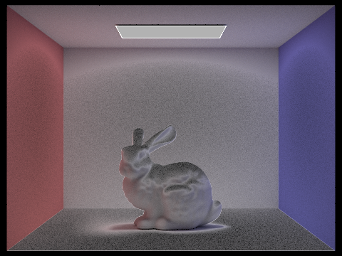 |
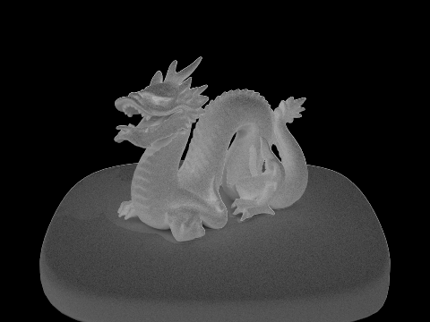 |
|
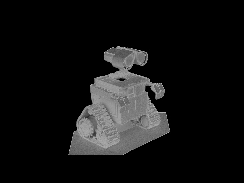 |
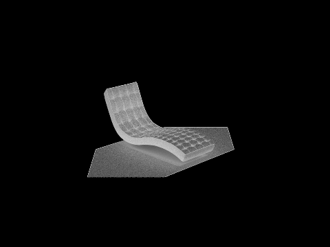 |
Direct vs Indirect illumination
|
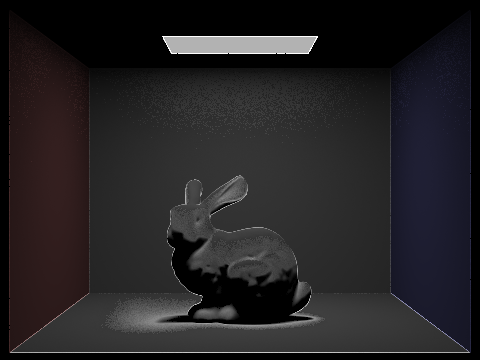 |
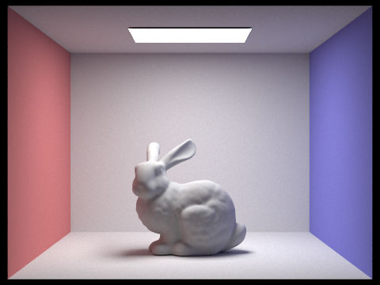 |
CBbunny: m-th bounce, unaccumulated
|
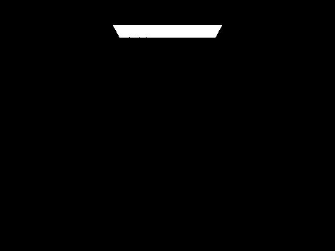 |
|
|
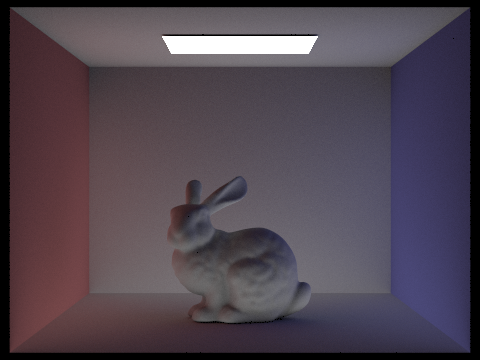 |
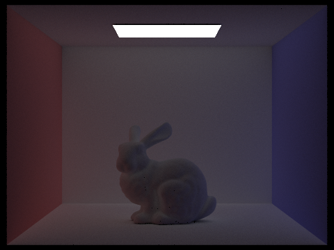 |
|
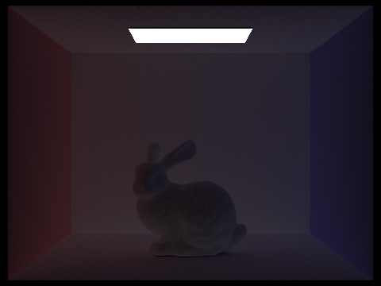 |
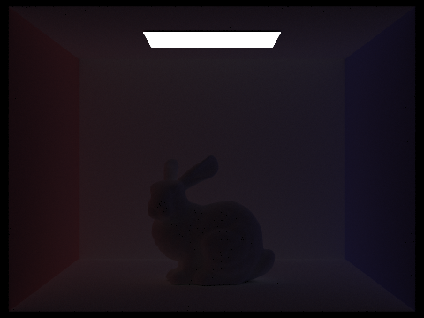 |
At m=2, the image starts to show indirect lighting from surfaces reflecting light onto other surfaces, especially in regions that are not directly lit by the light source. This makes shadowed areas look less harsh and begins to add softer illumination throughout the scene. At m=3, the effect becomes even more subtle but still helps brighten darker regions and smooth out the overall lighting. Compared to rasterization, these higher-order bounces make the image look much more realistic because rasterization usually only captures direct lighting, while path tracing captures the way light actually bounces around the scene
Accumulated vs unaccumulated bounces
|
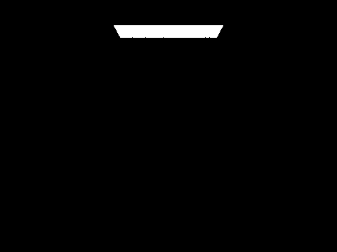 |
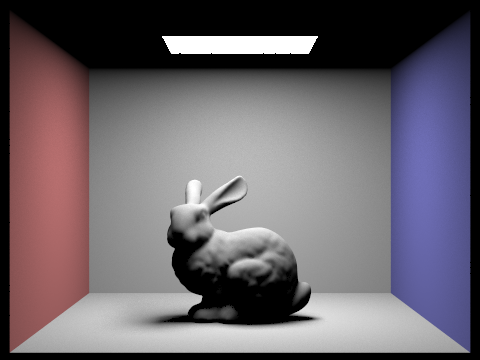 |
|
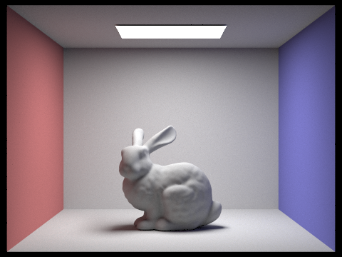 |
|
|
|
|
Accumulated bounces involves each image including all lighting contributions up to the specified bounce depth, so the image gets progressively brighter and more complete as m increases. In contrast, the unaccumulated renders isolate the contribution from a single bounce level, which makes it easier to see what each bounce adds individually. The accumulated images look more like the final render, and the unaccumulated images are more useful for understanding how indirect lighting builds up.